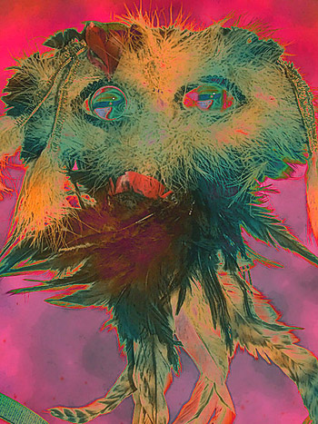

The Shadow Dancer
by Margaret Menamin

………………..To Erato
…O shadow dancer, you were never mine.
You beckoned me on tiptoe to the rings
where I played pieface to buffoons ands kings
and Punchinello to your Columbine.
You never missed a cue or lost a line:
Each time I tangled toadlike in my strings
I broke upon your laughter in the wings
and felt your laughter hacking at my spine.
I juggled eels and waited for a sign
of butterflies. Your tinsel murmurings
beset my sleep and promised fragile things
for which I stirred and groped. If there were nine
…who gambled for me, it was not my choice
…that I ring up the curtain at your voice.
…I whirl with other dancers and they pall,
unable to keep up the wretched pace
you set when you enticed me to the chase.
Above the blurred kaleidoscope you call
and I break free to follow you, in thrall
of some Walpurgis madness. No embrace
can stay me from the fever of this race,
the lifelong torture of this carnival.
Behind each mask, each mirror on the wall
there waits the mocking specter of your face,
caressing, cold, but never commonplace.
You smile, and I abandon each and all.
…The others beckon, but I fall in line
…to wait my turn with one who is not mine.
(Previously published in Ozark Review)
 |